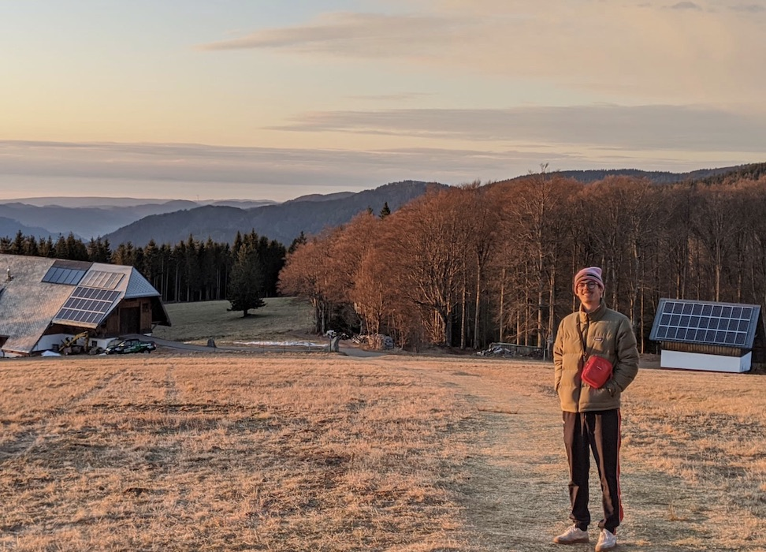

Ich bin Luca und Student an der Hochschule Furtwangen University.
Drücken sie hier um 1000€ zu gewinnen
Sowas find ich Witzig:youtube.com
So seh ich aus, wenn ich auf dem Brendt stehe:
Echt kalt da oben.
Sprittwochs finde ich mich gerne im Engel für eine Runde moderaten Drogenkosum ein.
Diese Individuen motivieren und partizipieren dabei: Mai , Felix , Jojo , Tim , Simon , Alina , Sarenka , Levin & Uwe , der ist auch dabei.
Henri hingegen ist bei genannten Verammlungen oft säumig.